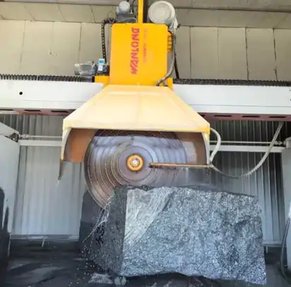
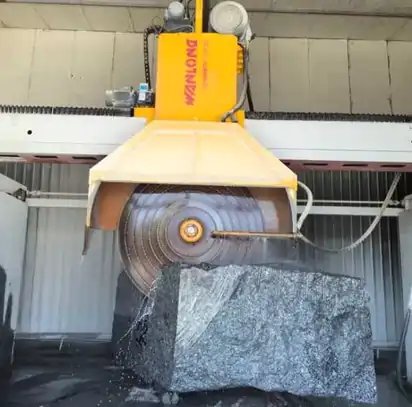

فروشگاه تسمه بزرگمهر با سالها تجربه در زمینه فروش تخصصی انواع تسمههای صنعتی، آماده ارائه مشاوره فنی و حرفهای، خدمات پس از فروش و همکاری گسترده با صنایع مختلف و مصرفکنندگان محترم میباشد.
ما تأمینکننده انواع تسمههای صنعتی مورد نیاز ماشینآلات سبک، متوسط و سنگین هستیم و به عنوان نمایندگی معتبر فروش انواع تسمه در بازار تسمه تهران، خیابان سعدی جنوبی فعالیت میکنیم.
شرکت بزرگمهر با سابقهای درخشان، انواع تسمههای انتقال نیرو، تایمینگ، شیاری، ویبلت، جوشی، دور متغیر و نقاله PVC را با کیفیت بالا، استانداردهای بینالمللی و قیمت رقابتی ارائه میدهد.
برای دریافت مشاوره فنی و اطلاع از قیمتها با ما در تماس باشید و از خدمات مشاوره رایگان ما بهرهمند شوید.
تسمه یکی از اجزای حیاتی در انتقال قدرت مکانیکی است که به صورت حلقهای از جنس لاستیک، پلییورتان یا مواد ترکیبی مقاوم ساخته میشود. این قطعه انرژی مکانیکی را بین دو یا چند پولی منتقل میکند و نقش اساسی در عملکرد صحیح ماشینآلات صنعتی دارد.
تسمهها در صنایع مختلف مانند خودروسازی، صنایع غذایی، نساجی، چاپ و بستهبندی، معدن، نیروگاه و پتروشیمی کاربرد گسترده دارند.
انتخاب تسمه مناسب، ضمن افزایش بهرهوری و کاهش هزینههای نگهداری، به افزایش طول عمر دستگاهها و کاهش توقف تولید کمک میکند.
تسمههای صنعتی بزرگمهر با رعایت استانداردهای ISO و DIN و استفاده از تکنولوژیهای نوین تولید، دوام بالا، کاهش مصرف انرژی و نویز کم را تضمین میکنند.
تسمههای دندانهدار تایمینگ برای انتقال دقیق حرکت بین دو پولی یا چرخ دنده استفاده میشوند و کنترل زمانبندی دقیق در ماشینآلات را ممکن میسازند. مناسب برای خطوط تولید خودروسازی، بستهبندی و پرینترهای صنعتی. مواد مقاوم و با دوام، طول عمر بالا، کاهش سایش و حداقل نیاز به نگهداری.
تسمههای V شکل با شیارهای حلقوی روی سطح برای ایجاد اصطکاک بیشتر طراحی شدهاند. مناسب ماشینآلاتی که نیاز به انتقال قدرت از موتور به تجهیزات جانبی دارند مانند پمپها، فنها و کمپرسورها. انعطافپذیری بالا، تحمل دمای گسترده و دوام طولانی.
تسمههای ویبلت با طراحی ویژه برای انتقال نیرو در ماشینآلات صنعتی پرتنش. کاهش لغزش و نویز، افزایش راندمان و کاهش استهلاک قطعات مکانیکی. مقاومت بالا در شرایط صنعتی سخت و دوام طولانی.
تسمههای گرد یا چندضلعی PU و PVC، مناسب برای انتقال مواد و حرکتهای دقیق. جوشکاری دقیق، طول دلخواه، کاربرد در بستهبندی، مواد غذایی و خطوط مونتاژ. مقاومت بالا، طول عمر زیاد و کیفیت تضمین شده.
تسمههای V شکل با مقطع ذوزنقهای، انتقال نیرو در ماشینآلات با سرعت متغیر. مناسب موتورهایی با بارهای متفاوت و تغییر دور. مقاومت بالا، راندمان انرژی بهینه، طول عمر طولانی و انعطافپذیری عالی.
تسمههای تخت با لایه پلیآمید مقاوم، انتقال نیرو با کمترین لغزش و اتلاف انرژی. مناسب خطوط تولید صنعتی، نقالهها و ماشینآلات دقیق. دوام طولانی، انعطافپذیری بالا، مناسب صنایع سنگین و سبک.
تسمههای نقاله PVC برای انتقال مواد متنوع شامل مواد غذایی و شیمیایی. مقاوم در برابر سایش، حرارت و روغن. طراحی بهینه برای جابجایی روان و ایمن مواد، طول عمر طولانی و کیفیت بالا.
تهرا خیابان امیرکبیر ابتدای سعدی جنوبی، پاساژ ایران (بلوک ۷ غربی)، واحد ۴۰۱
تلفن:021-33929881 - 021-36871848